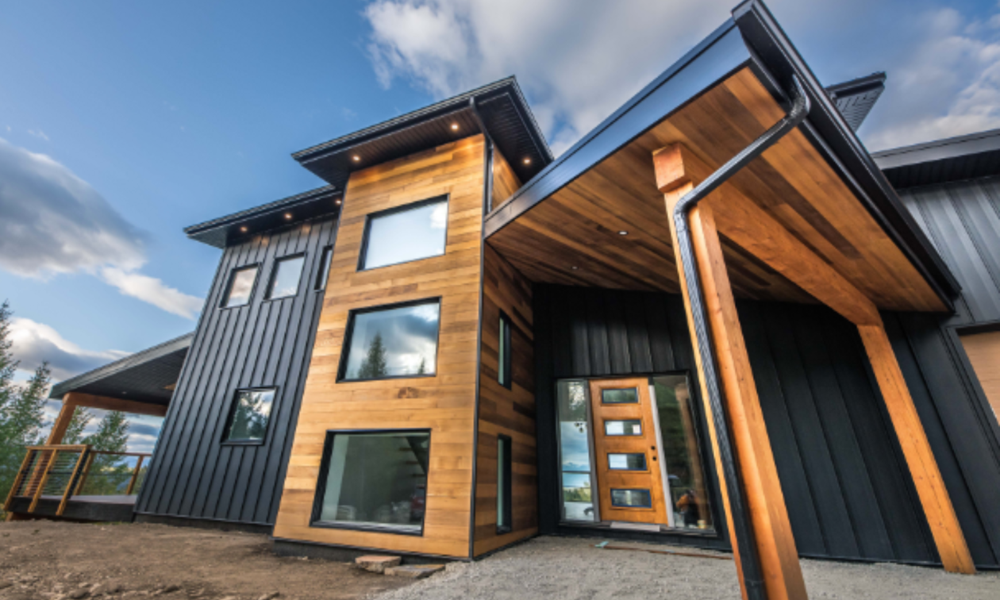
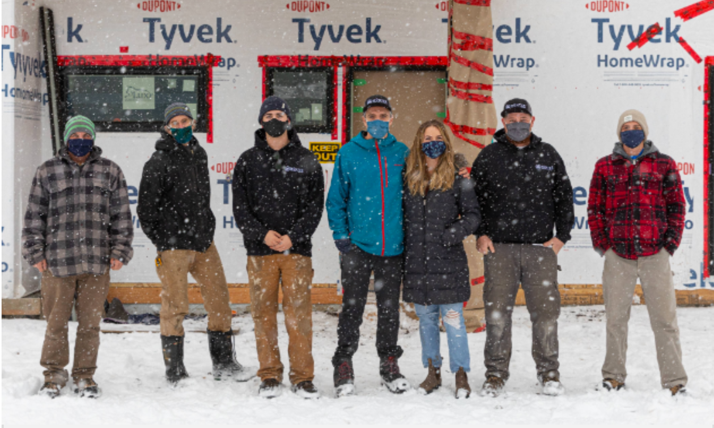
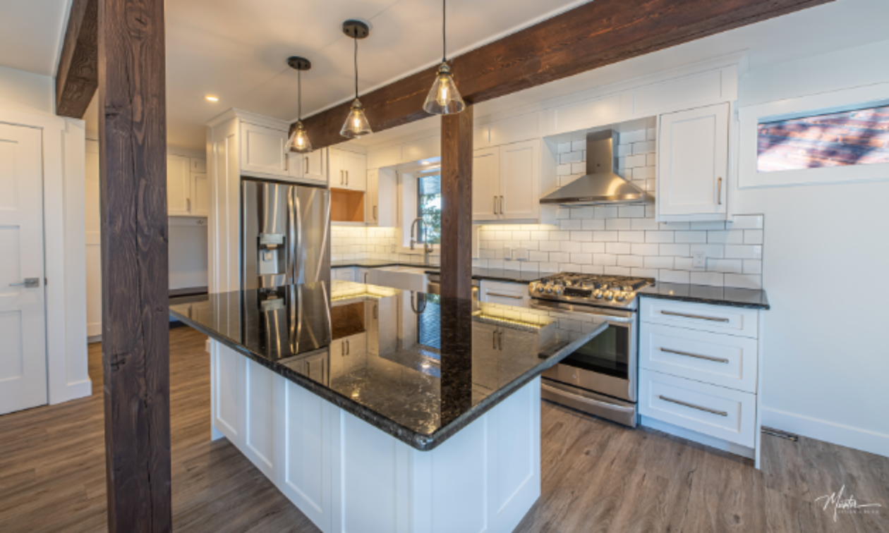
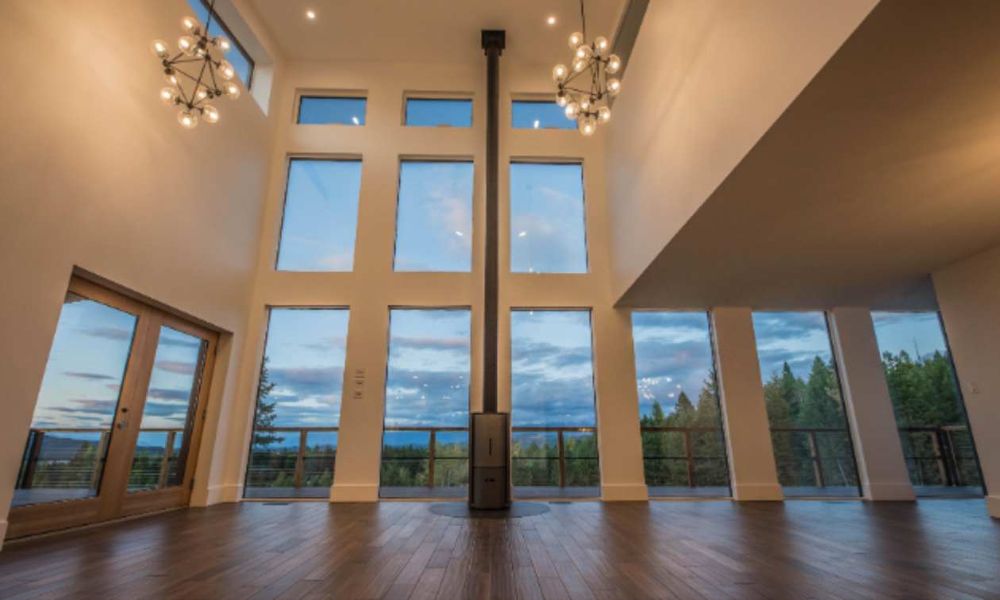

From the U.K. to B.C., this world-class carpenter wants to build the home of your dreams
Robin Brazenall, along with his wife, Amy, founded Münter Design & Build as a home-based business in 2015.

Photo courtesy Münter Design & Build
by Kyle Born
Münter Design & Build is a luxury custom home builder in the East Kootenay that draws its inspiration from across the globe. The Kimberley-based business designs and builds custom homes, large renovations and light-commercial projects.
Robin Brazenall, along with his wife, Amy, founded Münter Design & Build as a home-based business in 2015. In just five years, Münter Design & Build has grown from a two-person firm to the premier home builder in the market with over 10 employees and a bevy of awards, including the 2020 Home Builder Award of Excellence by the Canadian Home Builders Association Central Interior.
Photo courtesy Münter Design & Build
Robin Brazenall grew up in the United Kingdom with a keen interest in buildings and architecture. He built all sorts of creations in his dad’s workshop and took that experience with him to study Design Technology at college in England. After graduation, Robin completed a carpentry apprenticeship and became a ticketed journeyman carpenter.
Robin met Amy while travelling in B.C. and then decided to make the move to Canada. He got sponsored by a large construction firm in Vancouver to work as part of a special projects team where he was involved in projects like the new Main Street Skytrain station.
Robin and Amy then had their first child and set up their new venture together. They both share a passion for building, designing, and collaborating with clients to build the home of their dreams.
I've always had a passion for building things, for design and architecture. This was a natural flow for me—from being a journeyman carpenter and then integrating my background in design—to start a design-build firm where we get to integrate creativity with the actual construction and project management. We love being involved in the whole process and getting to see first-hand how the concept comes to fruition.
We are really good at building strong relationships with our clients and our team, and producing amazing, unique spaces with great attention to detail.
Photo courtesy Münter Design & Build
My favourite part of our service is being able to seamlessly integrate the design and construction aspects into one. It has tremendous benefits for our clients and our team, as it allows us to realize our vision from the start, and adapt to changes quickly, with the dynamic flexibility of having everything in-house from start to finish.
Sustainability has always been an important part of our philosophy. We are at the cutting edge of building science with both our design and in-field construction methods to create high-performance homes that are comfortable, healthy and energy-efficient.
We take the extra time and effort to recycle as much construction waste as possible from our builds. We incorporate sustainable materials as much as possible, whether that is locally sourced materials, recycled/recyclable materials and energy-efficient mechanical, electrical and plumbing systems.
Like all businesses, COVID-19 has presented some unique challenges for us, but despite this, the new housing and renovation market remains very strong.
Before all of this, the biggest challenge was moving to a small town where everyone knows everyone and then trying to build our brand and establish ourselves in the community where, as a newcomer, you have to gain people's trust and beat all of their expectations.
And that listing price must have been bang-on as the Loganbergs had an accepted offer in four days.
Photo courtesy Münter Design & Build
We have a passion for the great outdoors and we knew we wanted to be in the mountains, so it was an obvious choice for us to move here and raise a family. Houses are still affordable and there is a small-town feel with a great community, which has been somewhat lost with other bigger and busier mountain towns.
The people here make it great. There’s a great sense of community. We have fantastic neighbours and friends. We love having a huge adventure playground right on our doorstep that doesn't get overrun with crowds. It’s only a five minute walk and you are immersed in nature.
We love skiing—that's what brought me to Canada in the first place. We also love camping, hiking, mountain biking, walking the dog in the Nature Park, going to the lakes in the summer, stand-up paddleboarding and playing on the beach with the kids.
Photo courtesy Münter Design & Build
Running a business and having two young children doesn't offer up a huge amount of time for passion projects, but I'd say renovating our house is the passion project right now.
We’re grateful to be able to live and work in the East Kootenay. With everything that is going on, there's no greater place to be right now than right here. We count our lucky stars that we live where we do—in a vibrant community surrounded by breathtaking scenery and nature.